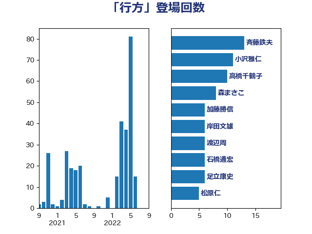

単語「行方」

| 斉藤鉄夫 | 公明党 | 13 回 |
| 小沢雅仁 | 立憲民主党 | 11 回 |
| 高橋千鶴子 | 日本共産党 | 10 回 |
| 森まさこ | 自由民主党 | 8 回 |
| 加藤勝信 | 自由民主党 | 6 回 |
| 岸田文雄 | 自由民主党 | 6 回 |
| 渡辺周 | 立憲民主党 | 6 回 |
| 石橋通宏 | 立憲民主党 | 6 回 |
| 足立康史 | 日本維新の会 | 6 回 |
| 松原仁 | 立憲民主党 | 5 回 |
| 大口善徳 | 公明党 | 4 回 |
| 岬麻紀 | 日本維新の会 | 4 回 |
| 東徹 | 日本維新の会 | 4 回 |
| 舩後靖彦 | れいわ新選組 | 4 回 |
| 足立敏之 | 自由民主党 | 4 回 |
| 長浜博行 | 無所属 | 4 回 |
| 階猛 | 立憲民主党 | 4 回 |
| 杉尾秀哉 | 立憲民主党 | 3 回 |
| 田村智子 | 日本共産党 | 3 回 |
| 紙智子 | 日本共産党 | 3 回 |
| 萩生田光一 | 自由民主党 | 3 回 |
| 道下大樹 | 立憲民主党 | 3 回 |
| 鈴木宗男 | 日本維新の会 | 3 回 |
| 中川宏昌 | 公明党 | 2 回 |
| 勝部賢志 | 立憲民主党 | 2 回 |
| 和田有一朗 | 日本維新の会 | 2 回 |
| 城井崇 | 立憲民主党 | 2 回 |
| 室井邦彦 | 日本維新の会 | 2 回 |
| 小宮山泰子 | 立憲民主党 | 2 回 |
| 岡本あき子 | 立憲民主党 | 2 回 |
| 岩渕友 | 日本共産党 | 2 回 |
| 松野博一 | 自由民主党 | 2 回 |
| 林芳正 | 自由民主党 | 2 回 |
| 森山浩行 | 立憲民主党 | 2 回 |
| 浜口誠 | 国民民主党 | 2 回 |
| 浜田聡 | NHK党 | 2 回 |
| 神津たけし | 立憲民主党 | 2 回 |
| 福島みずほ | 社会民主党 | 2 回 |
| 羽田次郎 | 立憲民主党 | 2 回 |
| 菅家一郎 | 自由民主党 | 2 回 |
| 藤岡隆雄 | 立憲民主党 | 2 回 |
| 西岡秀子 | 国民民主党 | 2 回 |
| 金子恭之 | 自由民主党 | 2 回 |
| 長峯誠 | 自由民主党 | 2 回 |
| 馬場成志 | 自由民主党 | 2 回 |
| おおつき紅葉 | 立憲民主党 | 1 回 |
| たがや亮 | れいわ新選組 | 1 回 |
| 三木圭恵 | 日本維新の会 | 1 回 |
| 上野通子 | 自由民主党 | 1 回 |
| 中西祐介 | 自由民主党 | 1 回 |
| 亀岡偉民 | 自由民主党 | 1 回 |
| 今井絵理子 | 自由民主党 | 1 回 |
| 伊波洋一 | 無所属 | 1 回 |
| 伊藤孝江 | 公明党 | 1 回 |
| 伊藤岳 | 日本共産党 | 1 回 |
| 務台俊介 | 自由民主党 | 1 回 |
| 古川元久 | 国民民主党 | 1 回 |
| 古賀之士 | 立憲民主党 | 1 回 |
| 嘉田由紀子 | 無所属 | 1 回 |
| 國場幸之助 | 自由民主党 | 1 回 |
| 塩崎彰久 | 自由民主党 | 1 回 |
| 塩村あやか | 立憲民主党 | 1 回 |
| 大串博志 | 立憲民主党 | 1 回 |
| 大野泰正 | 自由民主党 | 1 回 |
| 太栄志 | 立憲民主党 | 1 回 |
| 宮崎雅夫 | 自由民主党 | 1 回 |
| 小森卓郎 | 自由民主党 | 1 回 |
| 山口那津男 | 公明党 | 1 回 |
| 山添拓 | 日本共産党 | 1 回 |
| 山田太郎 | 自由民主党 | 1 回 |
| 岡本三成 | 公明党 | 1 回 |
| 岡田克也 | 立憲民主党 | 1 回 |
| 川合孝典 | 国民民主党 | 1 回 |
| 川崎ひでと | 自由民主党 | 1 回 |
| 川田龍平 | 立憲民主党 | 1 回 |
| 市村浩一郎 | 日本維新の会 | 1 回 |
| 平口洋 | 自由民主党 | 1 回 |
| 平木大作 | 公明党 | 1 回 |
| 打越さく良 | 立憲民主党 | 1 回 |
| 新藤義孝 | 自由民主党 | 1 回 |
| 有村治子 | 自由民主党 | 1 回 |
| 木村次郎 | 自由民主党 | 1 回 |
| 木村英子 | れいわ新選組 | 1 回 |
| 末松信介 | 自由民主党 | 1 回 |
| 柳ヶ瀬裕文 | 日本維新の会 | 1 回 |
| 柴田巧 | 日本維新の会 | 1 回 |
| 梶山弘志 | 自由民主党 | 1 回 |
| 榛葉賀津也 | 国民民主党 | 1 回 |
| 武井俊輔 | 自由民主党 | 1 回 |
| 水岡俊一 | 立憲民主党 | 1 回 |
| 池下卓 | 日本維新の会 | 1 回 |
| 泉健太 | 立憲民主党 | 1 回 |
| 渡辺猛之 | 自由民主党 | 1 回 |
| 牧原秀樹 | 自由民主党 | 1 回 |
| 牧野たかお | 自由民主党 | 1 回 |
| 田村憲久 | 自由民主党 | 1 回 |
| 田村貴昭 | 日本共産党 | 1 回 |
| 石川博崇 | 公明党 | 1 回 |
| 石川大我 | 立憲民主党 | 1 回 |
| 磯崎仁彦 | 自由民主党 | 1 回 |
| 竹内真二 | 公明党 | 1 回 |
| 緑川貴士 | 立憲民主党 | 1 回 |
| 美延映夫 | 日本維新の会 | 1 回 |
| 舟山康江 | 国民民主党 | 1 回 |
| 芳賀道也 | 国民民主党 | 1 回 |
| 茂木敏充 | 自由民主党 | 1 回 |
| 蓮舫 | 立憲民主党 | 1 回 |
| 谷合正明 | 公明党 | 1 回 |
| 豊田俊郎 | 自由民主党 | 1 回 |
| 重徳和彦 | 立憲民主党 | 1 回 |
| 金城泰邦 | 公明党 | 1 回 |
| 鈴木敦 | 国民民主党 | 1 回 |
| 鈴木英敬 | 自由民主党 | 1 回 |
| 鈴木貴子 | 自由民主党 | 1 回 |
| 鎌田さゆり | 立憲民主党 | 1 回 |
| 阿達雅志 | 自由民主党 | 1 回 |
| 阿部知子 | 立憲民主党 | 1 回 |
| 音喜多駿 | 日本維新の会 | 1 回 |